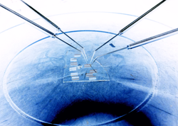 |
I-V SoftwareMichael D. Kelzenberg(c) 2015. All rights reserved.Software web page:
|
Description
This software works with Keithley 23X and 24XX series source meter units (SMUs) to perform common types of current-voltage characterization of two-terminal devices. It is designed to assist with the typical measurements performed at a probe station in an R&D environment.
Applications:
- Bulk semiconductors and contacts: 4-point probes, transfer length method, hall effect, ...
- Photovoltaics [solar cells]: Efficiency, VOC, J/ISC, FF (fill factor), J/I0 (dark current), n (ideality factor), ROC (equiv. series resistance @ VOC), RSC (equiv. shunt resistance @ VSC)
- Other diodes [p-n or Schottky]: IS, n, RS, VBR, IREV
- Triodes [transistors] (w/ external bias/gate/excitation supply): Transconductance, DC gain, Early voltage, output resistance, VTH, beta, or activation energy (w/ temperature stage), ...
- Thermoelectrics: Thermocouples, Peltier coolers, thermoelectric generators, ...
- Discrete components: cable/conductor/trace resistance, inductor series resistance, dielectric leakage/charging, ...
- Electrochemistry: electrodes, (photo)electrochemial cells, batteries, ...
- Other DC loads: LEDs, motors, resistors, lamps, relays, solenoids, etc...
Safety disclaimer
Warning
Operating the equipment discussed herein, with or without the use of the I-V Software, might expose you or others to electrical hazards that can result in injury or death, and might also result in damage to the equipment, destruction of connected devices, or fire.
Neither these instructions, nor any other part of the I-V Software, identify all hazards that may be present. The software is provided AS-IS with absolutely no warranty, and may function unpredictably or unreliably, or even in ways contradictory to documentation or prior behavior.
You, the user(s) of this software, are solely responsible for the safety of people and equipment while using this software.
In addition to the general warnings and safety considerations, please consider the following:
- Read and understand the manual for the SMU you are using.
- Be careful when measuring inductors and capacitors. Do not attempt to rapidly change an inductor's current or a capacitor's voltage; the resulting voltage or current spikes can damage the SMU or other equipment, and possibly harm you. Pay particular attention to the SMU's output-off state setting (ZERO or GUARD recommended), and consider adding a spark gap (or solid-state TVS) to protect the instrument.
- Be careful when using "source I, measure V" modes. Unintended open circuits (e.g., faulty contacts) can result in the maximum compliance voltage (or possibly more) present at device terminals.
- Be careful when using 4-point (kelvin connected) measurement techniques. Resistive (or faulty) contacts can result in dramatically higher voltages present at the "source" terminals than you are measuring or expecting.
- Be careful when charging/discharging batteries, and read the specific warnings and instructions in the instrument's manual regarding these applications. In particular, failure to set the instrument's compliance and output-off state as instructed can result in damage to the SMU and the battery.
- Be especially careful with high voltage, sharp probe tips, unshielded/non-interlocked test assemblies, and unattended energized equipment.
Requirements
This software is provided as a win32 binary, and should be capable of running on most PCs running Windows XP through Windows 10. Source code and binaries for other platforms are not available. Additional requirements include:
- One of the following supported Keithley SMUs:
- 236, 237, or 238 (all tested).
- 2400, 2410, 2420, 2425, or 2440 (2420 tested).
- The 2430 SMU should be supported in non-pulsed mode; set SMU type to 2425 (not tested).
- The 2401 low-voltage model should work; set SMU type to 2400 and don't use the 200V range (not tested).
- Newer generation SMUs (e.g., 2600-series) might work using 2400-series emulation (not tested).
- A supported GPIB or RS232 (serial) adapter for your PC. 23X-series instruments support GPIB only; 24XX-series instruments support GPIB or RS232.
- Known compatible GPIB adapters include those made by National Instruments such as the USB-GPIB-HS. The Agilent 82357B adapter has also been used successfully. Non-NI adapters may require additional software drivers or configuration steps.
- Nearly any RS232 adapter should work; I have tested operation with motherboard-integrated, PCI, and USB interfaces. Regardless of type, you will need to find and install the appropriate drivers.
- NI LabVIEW runtime engine. This software was built and tested using the 2014 LabVIEW 32-bit runtime engine, available here.
- NI 488.2 drivers and runtime libraries. This software was built and tested with NI 488.2 version 14.0, available here.
- NI Serial drivers and runtime libraries. This software was built and tested with NI Serial version 14.0, available here.
- NI VISA drivers and runtime libraries. This software was built and tested with NI VISA version 14.0.1, available here.
Installation and setup
Start by installing the drivers and runtime libraries required by this software and your GPIB/RS232 interface. Then, connect the GPIB/RS232 adapter and verify its proper function (e.g., using your computer's device manager or the NI-MAX software). Finally, connect the communications interface to the SMU and power it on. Take note of the communications settings displayed on the SMU during the power-on sequence--it will show either its GPIB address, or that it is configured for RS232.
| Default GPIB address | |
| 23X | 24XX |
| 16 | 24 |
If you need help determining which GPIB adapter or COM port should be used, open the NI-MAX software (included with 488.2 and/or VISA). For GPIB interfaces, you can use "scan for instruments" to find the SMU directly. For RS232, the instrument won't appear directly in NI-MAX, but if you are uncertain, you can try communicating with the instrument on available COM ports until you find it.
Upon launching, the I-V software will attempt communicating with the instrument. If the address and instrument type haven't yet been configured, an error will occur. Go to the "Instrument settings" tab and enter the correct instrument type and address. If errors continue, or if the software becomes unresponsive, see troubleshooting.
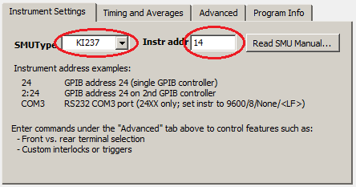
Initial setup: Enter the instrument address first, then select the SMU type.Option: RS232
24XX series instruments support RS232 serial communications. To use RS232:
- Press the front panel MENU button and navigate to the COMMUNICATION submenu. (Press LOCAL if needed to enable front panel buttons).
- Select RS-232. The instrument will reboot if switching from GPIB mode.
- Re-navigate to the COMMUNICATION -> RS-232 submenu,
- Set BAUD to 9600.*
- Set BITS to 8.
- Set PARITY to NONE.
- Set TERMINATOR to LF.
- Set FLOW CTRL to NONE.
- Enter the RS232 interface address into the I-V software (e.g., "COM1")**
Performing measurements
The software supports (3) common types of sweep measurements as well as DC (continuous) operation and custom (manual) commands.
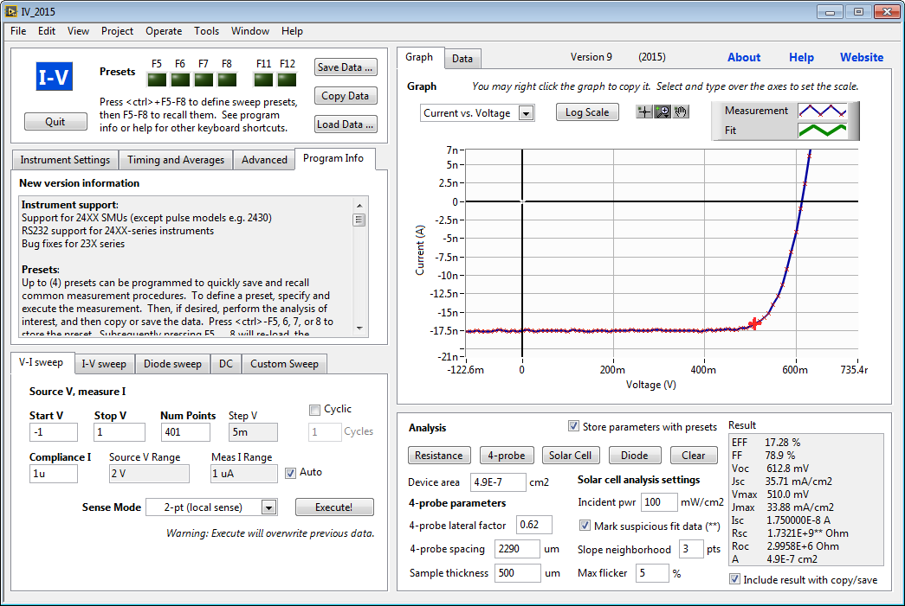
Screenshot of software showing measurements of a 1N4148 diodeSweeps
The first two sweep modes, V-I sweep and I-V sweep are continuous, linear-stair sweeps, and are similar in operation:
- Enter values for the sweep start and sweep stop
- Enter the number of points for the sweep, or alternately, click on the sweep step indicator to open a dialog box in which the desired step value can be entered.
- Enter the compliance setting, which is a limit value to prevent excessive current (or voltage) from being applied to the device under test.
- Select the sense mode:
- 2-pt (local sense) uses basic two-wire connections to the device under test
- 4-pt (remote sense) uses separate source and sense wires to the device under test. Also known as kelvin connections.
- The instrument's selected voltage and current ranges will be displayed. Unless auto-range is selected, sweeps will be performed using the fixed sense range shown.
- Press the "Execute" button to begin the sweep. The sweep progress will be shown on the SMU display, but the I-V software will be unresponsive while the sweep is running. The graph will be updated upon completion of the sweep. For particularly long sweeps, you may need to adjust the sweep timeout.
The third sweep mode, Diode sweep, is similar to the I-V sweep mode, except it performs a continuous, logarithmic-stair sweep. This is useful for measuring the exponential I-V behavior of diodes. Select the current range using the sliders. The polarity of the current can be positive or negative; however, the sweep always progresses from the smaller current magnitude to the larger current magnitude.
All sweep modes produce data sets that include voltage, current, time, and instrument-specific flags (e.g., compliance). The time values are reported by the SMU, which has an internal clock that is reset at the beginning of each sweep. By default, 24XX instruments report the measured (actual) source value, even if the instrument is in compliance. 23X-series instruments, however, report the commanded source value, which is not equal to the actual source value in cases of compliance.
Option: Auto-range
If selected, auto-range will instruct the instrument to automatically switch to the lowest available measurement range at each point of the sweep. This process is performed by the instrument, not the I-V software. Auto-range permits greater dynamic range in measurements. However, it can cause variations in sweep rates (high-sensitivity ranges have longer measurement delay), and it does not work well with certain devices or noisy configurations. Generally, auto-range is useful in improving measurement sensitivity. However, if a sweep returns puzzling results, or takes dramatically longer than intended, turn off auto-range as one of the first troubleshooting steps. Do not use auto-range in applications where constant dV/dt (or dI/dt) is desired during the sweep.
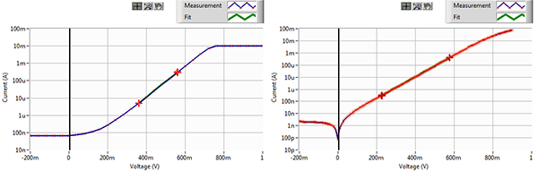
Comparison of diode V-I sweeps using fixed 10 mA range (left) and auto range with 100 mA compliance (right).Option: Cyclic sweeps
If selected, this option will append a second sweep sequence from the ending value back to the starting value. This back-and-forth sweeping can be repeated several times. The bias will be uninterrupted at either endpoint of the sweep. This is useful for measuring hysteretic I-V behavior, such as that of electrochemical electrodes, or that associated with ferroelectric devices.
Another useful application of cyclic sweeping is to verify the validity of certain challenging sweeps in which hysteresis is not expected, but might occur due to poor measurement setup. Common examples include semiconductor devices with poor contacts, in which resistive or one-directional contacts prevent the applied bias from reaching the device at certain voltages, or high-voltage insulators in which slow dielectric charging processes (charge trapping) give rise to non-linear time-varying leakage currents. In such cases, a cyclic sweep should be performed to confirm agreement between the forward and backward sweep directions. The appearance of hysteresis would then reveal a problem with the measurement setup, which might be resolved by slower sweep rates, four-wire contacts, or properly guarded test apparatus.
DC (continuous) mode
Unlike sweep measurements, DC (continuous) measurements operate indefinitely at a fixed voltage or current. Measurements are read continuously from the instrument, and are displayed on the graph in real-time.
To start operation in DC mode, first select the source mode (voltage or current) and the sense mode (2-pt or 4-pt). Then, enter the source value and compliance value, and select any other desired options. Press "Operate" to begin the measurement. The bias will be applied to the device under test, and measurements will be recorded continuously. Data will be plotted as a time series on the graph. Integrated charge and energy will be reported in the analysis results area (see power/charge integration).
Note: To prevent software lag, only the most recent 1000 data points are displayed on the graph during DC-mode operation. Earlier data points are retained in memory, and will be available for plotting and exporting after ending the measurement sequence. The upper limit on the number of data points depends on computer speed and memory, and on other limits imposed by LabVIEW or 32-bit memory address space. Modern computers can easily record ~100,000 data points, I have not yet found reason to record larger data sets. Therefore, there has been no attempt to optimize the code for larger data sets. It is likely that, after a large number of points have been recorded, the rate of measurements will decrease as the computer becomes fully burdened with storing measurements in memory.
Press "Operate" again to terminate measurements and remove the device bias.
When DC mode is operating, you can change the source current or voltage value as well as the compliance value. The changes will be reflected immediately on the instrument. Auto-ranging, integration time, averaging, and sweep delay can also be changed on the fly.
The time between measurements is determined by the software "sweep delay" setting, as well as instrument settings including the selected sensitivity range, integration period, and number of averages. Due to variations in communication and software execution speed, measurements do not occur at precisely timed intervals. Unlike sweep measurements, the time data values are not based on the instrument's internal timer; rather, they are based on a software timer. The accuracy of these time values is not specified. Thus, the time data might include a slight long-term drift that might vary from one computer to the next. Also, each data point's time value might differ slightly from the actual time of measurement due to variations in software execution order and speed. In practice, I have found the time values to be sufficiently accurate for all applications encountered to date.
Note: With GPIB, measurement rates can exceed 10 per second. The RS232 I/O codes are much slower, and the maximum read rate is approximately 2-3 per second.
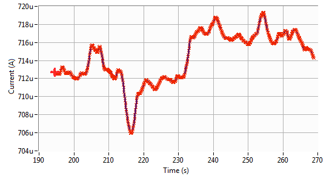
Time-varying current in a forward-biased p-n junction diode, measured in a drafty room. The changes in current are primarily due to temperature fluctuations.Option: Contact threshold
To assist with probing sensitive or fragile devices, this feature provides instant visual or audible feedback when contact has been made. To use: configure DC voltage source operation at a safe voltage such as 1V, with a reasonable current compliance such as 2 mA; then start DC-mode operation. With the probe(s) out of contact, the device current will be ~0 A. Set the contact threshold to 0.001 (A), and enable audible ("beep") and/or visual ("flash screen") contact indication. Then, approach the device with the probe(s). Contact feedback will occur once the measured device current reaches 1 mA.
It may be helpful to first touch the probes together to verify wiring and instrument setup.
The appropriate values for bias and contact threshold will depend on the I-V behavior of the device under test.
When sourcing current and measuring voltage, the contact threshold specifies a voltage below which contact occurs. Make sure to use a safe voltage compliance if such usage might expose the operator to live probe voltages--and never intentionally touch probes, conductors, or devices while the SMU is ON.
Beep means that the computer will play the default Windows notification sound, and that the SMU will beep (24XX series only).
Flash screen means that the software window background will turn bright red.
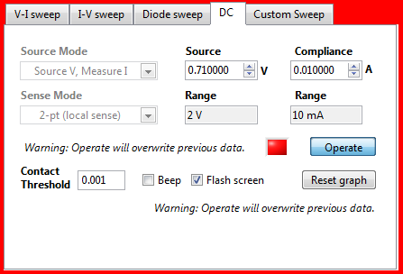
Screenshot showing DC-mode control options with contact indication.Custom commands
The custom commands sweep allows you to manually specify commands to perform sweep types that are otherwise not supported in this software. Three text fields are provided for commands, the sweep config command, the on/trigger/read command, and the off command. These commands are combined with advanced instrument setting commands. When a custom sweep is executed, the following commands are sent to the instrument:
- RESET command (J0XO0X for 23X; *RST for 24XX)
- Adv. init commands, if enabled
- Custom sweep config commands
- Adv. pre-sweep commands, if enabled
- Custom on/trigger/read commands
- Custom off command
- Adv. post-sweep commands, if enabled
At this point, the data is read from the instrument. Optionally, the software will wait for GPIB SRQ before initiating the read. In general, 23X-series instruments should use the wait-for-SRQ read method, whereas 24XX-series instruments can be configured either way.
In this mode, except for the initial RESET command, no other commands are automatically generated by the software. So, none of the instrument timing settings from the timing and averages tab will be transmitted to the instrument. To assist in verifying (or debugging) a custom command sweep, turn on the "debug" option under advanced instrument settings.
After the sweep data has been returned, the software will parse the data and display it on the graph. The software can only process ASCII-formatted data, so the custom commands must instruct the instrument to return data in ASCII format. The preferred format commands are:
- 23X-series: G13,1,2X
- 24XX-series: :FORM ASC;:FORM:ELEM VOLT,CURR,TIME,STAT
| Example: these commands should perform a pulsed voltage sweep on a 2430 SMU. This program comes from the instrument manual, Table 5-2: Basic pulse programming example. | |
| Custom sweep config commands |
:SOUR:FUNC:SHAP PULS; :SOUR:PULS:WIDT 0.002; :SOUR:PULS:DEL 0.003; :SENS:VOLT:NPLC 0.08; :TRIG:COUN 25; :SOUR:FUNC VOLT; :SOUR:VOLT:MODE FIXED; :SOUR:VOLT:RANG 20; :SOUR:VOLT:LEV 10; :SENS:CURR:PROT 10E-3; :SENS:FUNC "CURR"; :SENS:CURR:RANG 10E-3; :FORM ASC; :FORM:ELEM VOLT,CURR,TIME,STAT; |
| Custom sweep on/trigger/read command | :READ? |
| Wait for SRQ to read? | FALSE |
| Custom off command | (none) |
Exporting/importing data
There are several ways to export data from the I-V software:
- Save data. This button will open a file dialog to save the I-V data. The file format is tab-separated ASCII (suitable for opening in a spreadsheet program such as Excel). Saved files also contain additional segments including the analysis settings & results, and the data description field (if present).
- Copy data. This button copies the data to the clipboard in tab-separated ASCII format, suitable for pasting into most data processing or spreadsheet software. If selected, the analysis results (if displayed) are also included.
- Copy graph (as bitmap). To copy the graph as an image, exactly as it is displayed on screen, right-click on the graph area and select "Copy data." The graph will be copied as a bitmap image.
- Export graph (as image or data table). To export the graph in a different image format, or to directly export the data plotted, right-click on the graph area and select the "Export" submenu. With this approach it is possible to export the graph in vector graphics format (emf or eps).
To load prior trace data, use the "Load Data" button. The data file format much match that of files saved by this software, i.e., tab-separated ASCII with appropriate headers and/or metadata. If trying to import data from other sources, open a previously saved file in a text editor to view the file format.
Graphing data
The software provides numerous options to plot the measured data. Controls for zooming, panning, lin/log scale, and data selection are provided. The graph mode selector provides the following options:
- Current vs. Voltage
- Voltage vs. Current
- Current vs. Time
- Voltage vs. Time
- Power vs. Time (calculated for each data point as P=IV)
- Resistance vs. Time (calculated for each data point as R=V/I)
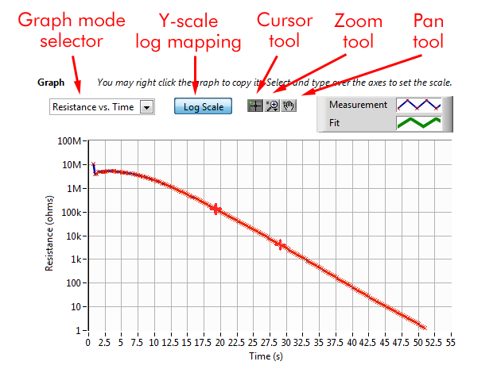
Illustration of graph controls.Data analysis
Resistance
A single (V,I) data point conveys the resistance (R=V/I) of a resistor, but it is often of interest to measure the average resistance over a number of bias values, or to measure the incremental (small-signal) resistance (R=dV/dI) of non-linear semiconductor devices such as diodes (series resistance) and transistors (output resistance). The resistance fit performs a linear fit to a selected region of I-V data, and is useful for these applications. Drag the graph cursors to indicate the start and stop of the fit range. The default type of fit is a linear regression fit.
Options:
- Hold shift while pressing the resistance analysis button to perform a simple, 2-point fit to the two cursors (instead of a regression fit).
- Double-click the resistance fit button to automatically select the fit range. The software will select the largest span of data points for which valid (i.e., non-compliance) measurements are present. This is generally useful for linear resistive devices, and is especially useful when using 23X-series instruments, which lack source read-back capability.
| Resistance analysis outputs | |
| R | Resistance (Ohms); slope of fit line on I-V plot |
| FitMSE | Mean square error of regression fit (NaN for non-regression fit.) |
| Isc | Current intercept of fit line ("short circuit current") |
| Voc | Voltage intercept of fit line ("open circuit voltage; early voltage") |
| FitRngV FitRngI | Fit range, start and endpoints |
| R' | Resistance per area (Ohms/cm2)* |
| A | Device area (record of parameter)* |
4-point probe
The 4-point probe is the standard instrument for quickly measuring wafer resistivity, or checking the sheet resistance of an epi or diffused layer. The probe comprises a Wenner electrode array with four colinear equally spaced electrodes. This configuration is illustrated below, along with the relevant equations. A brief discussion of the theory can be found here, or in any microelectronics fabrication textbook or website. However, note that terminology and symbol usage vary between authors; make sure to understand the purpose of the lateral correction factor C as used in this software.
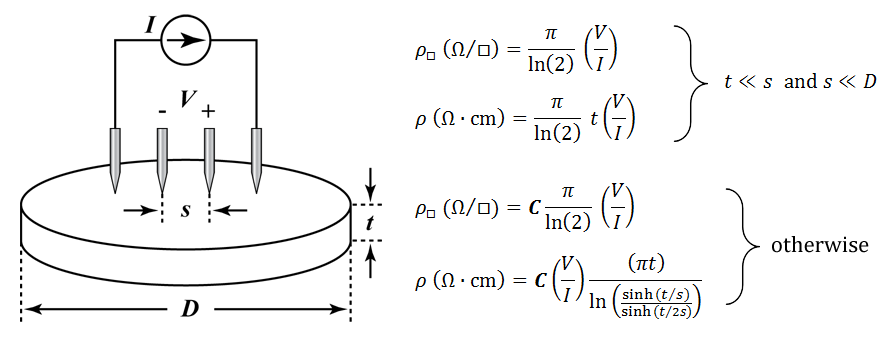
4-point probe illustration and equations.This software uses the general equations for sheet resistance and resistivity shown above (labeled "otherwise"). This resistivity equation already includes the first-order wafer thickness correction factor. The parameter C is a lateral correction factor, and comes into play when the lateral extent of the conductor (D) does not satisfy D >> s. This occurs with small wafers, or with small diffusion test areas on a process wafer. The value of C has been analyzed extensively for various test geometries (the "Haldor-Topsoe geometric factors"); as of this writing, two online resources can be found here and here.
Usually, D >> s, and the lateral correction factor is C = 1.0. For a circular wafer, in the limiting case of D = 3s, C = 0.5. This is not a lower limit, however; non-circular conductors, or probes placed near the edge of the conductor, can have even lower values for C.Most semiconductors have well-established relationships between resistivity and dopant concentrations; as of this writing, a useful online calculator for silicon can be found here.
Options/tips:
- Hold shift while pressing the 4-probe analysis button to perform a simple, 2-point fit to the two cursors (instead of a regression fit).
- Double-click the 4-probe fit button to automatically select the fit range. The software will select the largest span of data points for which valid (i.e., non-compliance) measurements are present. This is particularly useful for 4-probe measurements with 23X-series instruments.
- When first finding the appropriate voltage/current sweep settings, it is useful to make use of the F3/F4, F9/F10, F1, and F2 function keys.
| 4-probe analysis outputs | |
| Rs | Sheet resistance (Ohms/square) |
| Rho | Resistivity (Ohm-cm); valid only if t is known |
| R FitMSE Isc Voc FitRng | Parameters from resistance analysis (see above) |
| s | 4-probe spacing (um) (record of parameter) |
| t | Sample thickness (um) (record of parameter) |
| C | 4-probe lateral correction factor (record of parameter) |
Solar cell
The solar cell analysis automatically extracts the open-circuit voltage, short-circuit current, fill factor, and other parameters related to photovoltaic behavior. Efficiency is calculated based on the provided values for the device area and incident power density. The analysis works regardless of the polarity of the photovoltaic device, i.e., results are extracted from either quadrant IV ("conventional" polarity) or quadrant II ("reverse" polarity).
Options/tips:
- Double-click the solar cell analysis button to automatically scale the graph on the region of photovoltaic power generation. A graph cursor will indicate the point of maximum power.
- The software can try to detect suspicious PV analysis results, by looking for non-monotonic fluctuations in photocurrent. The "flicker" parameter sets this threshold.
- The analysis will also extract the local slope (resistance) of the I-V curve at the open-circuit and short-circuit points. These values can be useful in identifying major problems with shunt and series resistance; however, unless the I-V data is "clean and smooth", these extracted values tend to reflect measurement artifacts. The "slope neighborhood" field sets the number of points over which each slope is calculated.
| Solar cell analysis outputs | |
| EFF | Efficiency (%)* |
| FF | Fill factor (%) |
| Voc | Open-circuit voltage (mV) |
| Jsc | Short-circuit current density (mA/cm2)* |
| Vmax | Maximum power point voltage (mV) |
| Jmax | Maximum power point current density (mA/cm2)* |
| Isc | Short circuit current (A) |
| Rsc | Short-circuit resistance dV/dI (Ohms) |
| Roc | Open-circuit resistance dV/dI (Ohms) |
| A | Device area (cm2) (record of parameter)* |
| Incd. Pwr | Incident power density (mW/cm2) (record of parameter)* |
Diode
The diode analysis fits the exponential current-voltage behavior of a semiconductor p-n or Schottky junction diode. The result is a linear fit on a semilog plot, allowing extraction of diode parameters including ideality factor n and saturation current I0. To use, position the graph cursors to select the region of exponential I-V behavior, i.e., the knee of the I-V curve. Then press the diode analysis button and view the fit on a semilog plot.
Options/tips:
- Normally, ideality factor is extracted assuming a junction temperature of 300K. If the device is at a different temperature, press shift while pressing the diode analysis button. This will bring up a dialog box to input the device temperature.
| Diode analysis outputs | |
| n | Diode ideality factor |
| J0 | Diode dark/saturation current density (A/cm2)* |
| I0 | Diode dark/saturation current (A) |
| FitSlope | The slope of the linear fit line on the semilog plot |
| FitMSE | The mean-square-error of the linear fit |
| FitRngV | The start and end of the fit interval (voltages) |
| A | Junction area (cm2) (record of parameter)* |
Power/charge integration
When performing DC measurements, or viewing I-V data plotted in "Current vs. time" or "Voltage vs. time" modes, the software can integrate the power and charge dissipated (or generated) by the device under test. This occurs automatically during DC measurements. To display integrated power/charge after a measurement is complete, switch to "Current vs. Time" or "Voltage vs. time" graph modes, then drag the cursors to define the start and stop of the integration period. Results will be displayed automatically.
As discussed in the description of DC-mode measurements, software timing issues might introduce slight errors in total power and charge calculations. These errors should be negligible in all but the most demanding applications.
Sometimes, the integrated power or charge values will report 'NaN' (not a number). This means that the selected time interval contains invalid measurement points, or measurement points from which power (or charge) cannot be determined. The most frequent cause is that the instrument reported compliance for one or more measurements. The 23X-series source meters lack source-readback capability, thus when compliance occurs, the actual power delivered to the device cannot be determined.
| Power/charge integration outputs | |
| T | Duration of selected time interval (s) |
| S | Integrated energy (W-hr) |
| Q | Integrated charge (A-hr) |
| P_avg | Time--averaged power over selected interval (W) |
| I_Avg | Time-averaged current over selected interval (A) |
| T1 | Start time of time interval (s) |
| T2 | End time of time interval (s) |
Options and features
Timing and averages
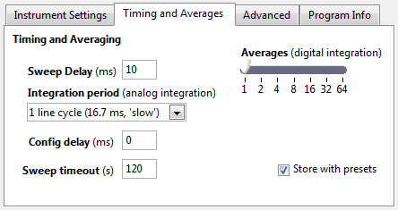
Timing and averaging options
- Sweep delay specifies the delay between voltage or current steps in a sweep, and is programmed to the SMU prior to sweep start. Specifically, this setting controls the delay between changing the bias level and beginning the reading(s). Depending on instrument configuration, this delay is usually added to or merged with a default delay for each measurement range. During DC-mode measurements, the sweep delay determines the approximate minimum delay between successive measurements, and is not transmitted to the SMU as part of the measurement process.
- Integration period controls analog integration on the SMU. Available integration periods are instrument-dependent.
- Averages controls digital integration on the SMU. For each data point, the SMU performs the specified number of readings and returns the average as the result.
- Config delay is a software setting that specifies the approximate time delay between preparing the SMU for a sweep, and commanding the start of the sweep. The primary use of this feature is to allow time for an interlocked/triggered excitation source to stabilize before starting the sweep -- such as a solar simulator that opens its shutter during the sweep. Sweeps with many commands or data points might take longer for the instrument to receive and process, and the actual delay between the end of configuration and the beginning of the sweep might be reduced. Note that during DC-mode operation, the SMU bias is applied without any delay; in this case only the first measurement is delayed.
- Sweep timeout is a software setting that specifies the amount of time to wait for the sweep results to be returned by the instrument. In the event that a communication or configuration error occurs, this timeout should prevent the software from remaining unresponsive indefinitely. However, if very long sweeps are being performed, a correspondingly longer sweep timeout is required; otherwise the software will timeout without reading the sweep results.
Presets
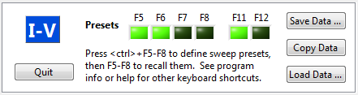
Preset indicatorsPresets provide a way of storing and recalling commonly used sweeps, analysis options, export actions, and graph zoom settings. They are accessed using keyboard shortcuts.
Measurement presets: There are four measurement preset banks, F5-F8. Each preset can be associated with a sweep or DC-mode measurement configuration. Sweep configuration presets can also be associated with an analysis action (resistance, 4-probe, solar cell, or diode) and an export action (save data or copy data).
To program a preset (e.g. F5), first configure and perform the desired measurement. If desired, configure and perform the desired analysis, and/or copy or save the data. Press the <ctrl> - F5 keys to store the preset. The F5 indicator will flash on screen. The preset will be associated with whichever sweep type is shown on the screen (including all settings for that sweep type), the most recently performed analysis type and options (if performed), and the most recently performed export action (save or copy, if either).
To recall the presets measurement and analysis settings, press the F5 key.
To recall the preset, perform the measurement, perform the analysis, and export the data, double-tap the F5 key.
Graph view presets: There are two graph view preset banks, F11 and F12. The presets store the graph's zoom, display mode, and axis mapping settings. To program a preset, press the <ctrl>-F11 keys. To recall the graph view settings, press the F11 key.
Keyboard shortcuts
| Keyboard shortcuts | |
| ` (~ key) | Auto-scale the graph |
| F1 | Execute the selected sweep, or start/stop DC-mode operation |
| F2 | Perform 4-probe analysis |
| F3 | Decrease the source sweep range or value |
| F4 | Increase the source sweep range or value |
| F5 F6 F7 F8 | Measurement presets keys: Single press: Recall preset settings
Double press: Recall and perform preset settings
<ctrl>-press: Store preset settings
|
| F9 | Decrease the compliance value |
| F10 | Increase the compliance value |
| F11 F12 | Graph zoom preset keys: Single press: Recall graph zoom preset
<ctrl>-press: Store graph zoom preset
|
| Shift | Modify behavior of certain functions: Operate/execute buttons: prevent graph auto-scale at end of measurement
Resistance, 4-probe analysis buttons: Perform simple (non-regression) fit
Diode analysis button: Use non-default temperature for analysis |
Advanced instrument commands
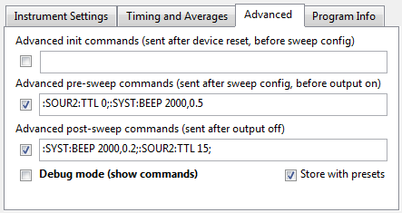
Example instrument commandsAdvanced instrument commands enable custom instrument commands to be integrated within the software's sweep (and DC-mode) routines. Example capabilities include triggering other instruments, custom interlocks, front/rear terminal selection, enabling/disabling source read-back, ...
For example, with a 2420 instrument in a solar cell testing laboratory, I used the commands shown above to provide an audible beep at the start and end of each sweep, and to control the shutter on the solar simulator. For shutter control, we fashioned a cable assembly to connect the relevant pins of the digital output connector on the 2420, to the TTL input pins on our solar simulator's shutter.
Each command group will only be sent to the instrument if the adjacent checkbox is checked.
Option: I/O debug window
For assistance when developing command strings for advanced instrument settings or custom sweeps, open the I/O debug window by enabling the "Debug mode" option under the "Advanced" tab. This window shows all commands that are sent to the instrument, and is helpful for identifying syntax errors or invalid command sequences. This window opens automatically upon I/O errors.
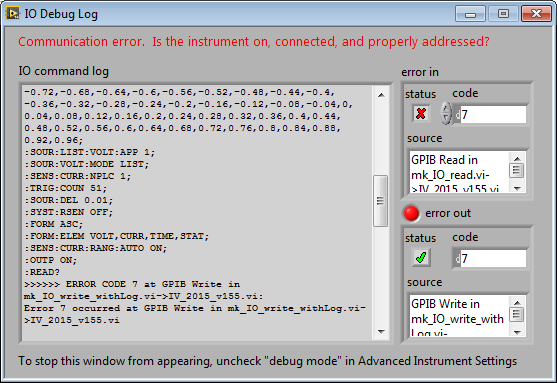
I/O debug windowData description field
When saving measurement data, it is usually a good idea to include notes describing the device measured and the measurement conditions. To assist with this process, a data description field is provided under the "Data" tab. Selecting "Auto-clear description" will clear the description field with each new measurement, and selecting "Prompt for info with save" will ensure that an updated description is provided with each file saved. To disable this feature, leave the Description field blank and clear the "Prompt for info..." checkbox.
Troubleshooting and tips
Instrument communications
The I-V software immediately tries to communicate with the instrument upon being launched. If the instrument type or address are incorrectly configured, this will result in a communication error. Normally this is not a problem, but under certain hardware configurations it is possible that this will cause the software to hang or become unresponsive, making it impossible to change the instrument address setting to the correct value.
If this occurs, find the "IV.ini" file in your system temporary directory, which for windows 7 is:
- C:\Users\<username>\AppData\Local\Temp
If the file does not exist, create it and enter the following three lines:
- [SMU]
GPIB="16"
DEV="236"
- [SMU]
GPIB="COM3"
DEV="2400"
Compliance with larger devices
When measuring larger solar cells (> ~ cm2), sometimes confusing behavior can occur. Symptoms include erratic I-V data, and illumination of the "COMPL" indicator on the SMU with or without the compliance flag being reported in the measurement data. This is because of the large capacitance of such devices, which causes the SMU to enter compliance when the bias voltage is changed, even if the steady-state device current is well below the compliance value. Sometimes this can lead to oscillations that prevent reaching steady state. One solution is to add some resistance in series with the SOURCE HI terminal and use 4-wire sensing to remove the effect of this resistor from the measurement data. The resistance required depends on the device and instrument range settings, but I've used values ranging from 1 - 100 Ohms. More information can be found in the SMU manual.
Licensing & other issues
This software is freeware, for non-commercial use only. For commercial use, please contact me.
The Freeware Software License can be found here. You may use this software for free, for non-commercial purposes only, on as many computers as you want, for as long as you see fit; however, you may not sell this software, include it in a product, or offer it for download on your web site.
If you find this software to be especially useful, please write me a note to let me know, or acknowledge it in your paper or thesis. Alternately, you may mail me one million dollars in small, unmarked bills. Your support will be greatly appreciated.
Contact
Michael Kelzenberg
mike@kelzenberg.net
Support
This software is provided for free. Technical support is not generally available; however, feel free to contact me with bug reports or ideas.